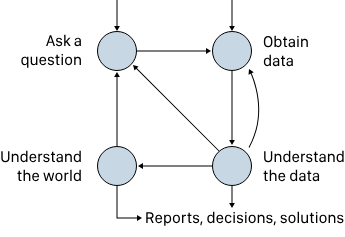

data001-notes1
数据科学生命周期

1. 提问 - 核心：提出好问题，问题类型（描述、探索、推理、预测）决定分析方向。 - 关键：将宽泛问题转化为可被数据回答的具体问题，明确所需数据与分析路径。2. 获取数据 - 来源：昂贵（需精确协议）或廉价（如在线数据）。 - 重点：检查数据质量（缺失、异常值）、范围、代表性及潜在偏见，必要时进行数据清洗与转换。
3. 理解数据 - 方法：探索性数据分析（图表、统计）、统计模型（如回归）。 - 特点：高度迭代，可能回溯至前阶段以优化数据或问题。
4. 了解世界 - 目标：将发现推广至样本之外。 - 手段：推断总体（A/B检验、置信区间），预测未来（预测区间、训练/测试拆分）。
问题与数据范围
如果要问自己一些关于数据的问题，可以从下面三个方面来进行提问： - 来源：谁收集？为何收集？（判断数据是否适用） - 时空：何时？何地？（判断情境是否相关） - 范围：目标群体？访问方式？选择与测量方法？仪器与校准？
偏差类型 - 覆盖偏差：抽样框未覆盖目标人群全体。 - 选择偏差：选择机制使样本单位概率不均（如便利样本、志愿者）。 - 无应答偏差：单位或项目无应答者与应答者存在系统性差异。 - 测量偏差：仪器或问题导致系统性单向偏离真实值。
方差类型 - 抽样方差：偶然选择样本导致的结果波动。 - 分配方差：实验分组随机性导致的结果波动。 - 测量误差：重复测量时围绕真值的随机波动。
仿真与数据设计
简单随机抽样：从骨灰罐中不更换弹珠的过程相当于简单的随机抽样。在简单的随机抽样中，每个样本被选中的概率相同。虽然方法名称中包含“简单”一词，但构 分层抽样 将人口划分为不重叠的组，称为地层（一个组称为地层，多个组为地层），然后从每个组中随机抽取一个简单样本。这就像每个层都有一个独立的骨灰盒，然后分别从每个骨灰罐中抽取弹珠。地层不必大小相同，我们也不必从每个地层取相同数量的弹珠。
集群抽样 这个详细一点，弄一个简单的example 将总体划分为不重叠的子群，称为簇，取一个简单的随机样本，并将该簇中的所有单元纳入样本。我们可以把这看作是从一个装有大弹珠的罐子中随机抽取的样本，而这些弹珠本身是装小弹珠的容器。（大型弹珠不一定包含相同数量的弹珠。）打开时，大弹珠样本会变成小弹珠样本。（群聚通常比地层小。） As an example, we might organize our seven marbles, labeled –, into three clusters, , , and . Then, a cluster sample of size one has an equal chance of drawing any of the three clusters. In this scenario, each marble has the same chance of being in the sample: But every combination of elements is not equally likely: it is not possible for the sample to include both and , because they are in different clusters.
Often, we are interested in a summary of the sample; in other words, we are interested in a statistic. For any sample, we can calculate the statistic, and the urn model helps us find the distribution of possible values that statistic may take on. Next, we examine the distribution of a statistic for our simple example.
抽样分布
这个很重要